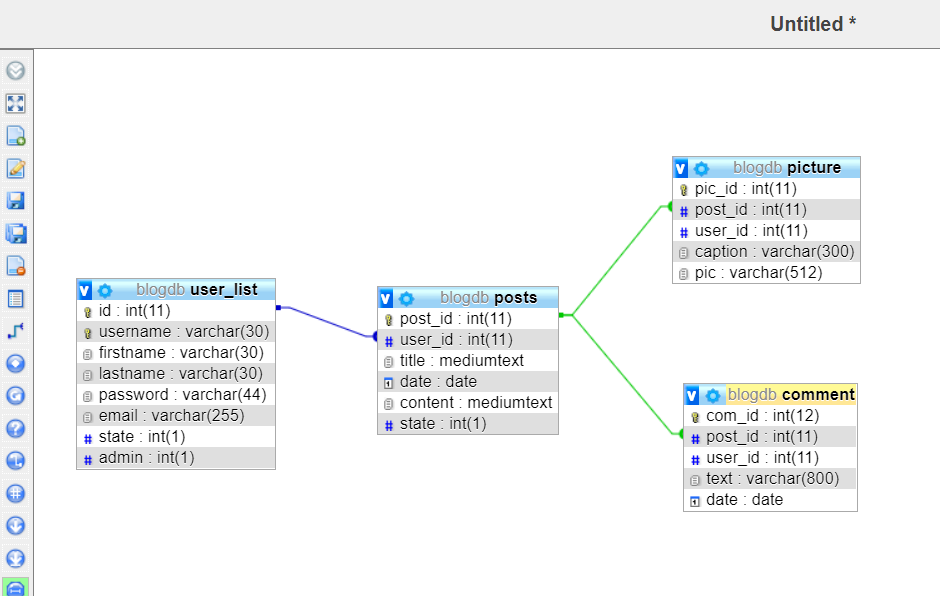

Front-end
Front-end is wat de gebruiker ziet en waarmee ze kunnen interacteren op een website.
Het front-end gedeelte van een website is wat de gebruiker daadwerkelijk ziet en mee interacteert. Dit omvat de gebruikersinterface, zoals knoppen, formulieren, menu's en alle andere visuele elementen van een website. Front-end ontwikkeling richt zich op het ontwerpen, ontwikkelen en het van deze gebruikerservaringen. Technologieën die vaak gebruikt worden in front-end ontwikkeling zijn HTML (HyperText Markup Language) voor de structuur, CSS (Cascading Style Sheets) voor de vormgeving en lay-out, en JavaScript voor de interactieve functionaliteit.
Doe eens iets met het blauwe vierkant: Klik of ga met je muis erover heen
Kenmerken van Front-end:
- Gebruikersinterface
- Lay-out en ontwerp
- Interactieve elementen zoals knoppen en formulieren
Back-end
Back-end is het gedeelte van de website dat niet zichtbaar is voor de gebruiker.
Het back-end gedeelte van een applicatie is het onzichtbare deel dat achter de schermen werkt om de functionaliteit van de applicatie mogelijk te maken. Dit omvat de server, de database en de applicatielogica. Back-end ontwikkelaars bouwen en onderhouden de server, schrijven code die communiceert met de database, verwerken gebruikersinvoer, voeren berekeningen uit, en bieden de gegevens aan die nodig zijn voor de front-end. Veelgebruikte programmeertalen voor back-end ontwikkeling zijn onder andere Java, Python, Ruby, PHP en JavaScript (met behulp van Node.js). Frameworks zoals Django, Ruby on Rails, en Express.js vergemakkelijken het ontwikkelingsproces van back-end applicaties door standaardoplossingen aan te bieden voor veelvoorkomende taken.
Kenmerken van Back-end:
- Server
- Applicatie
- Database